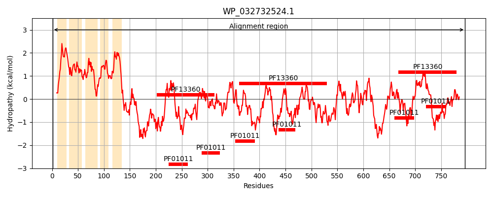
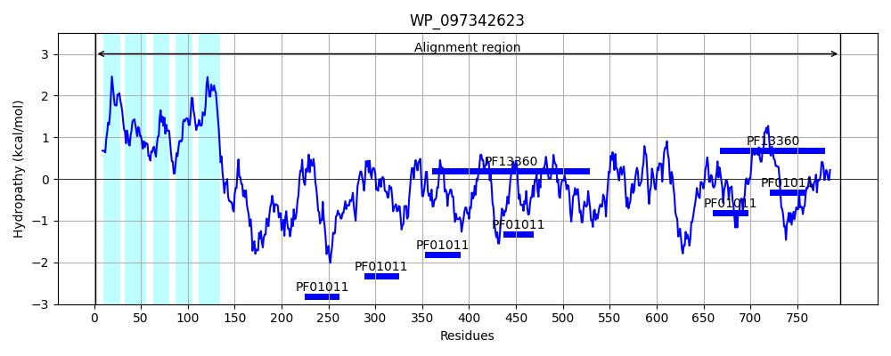
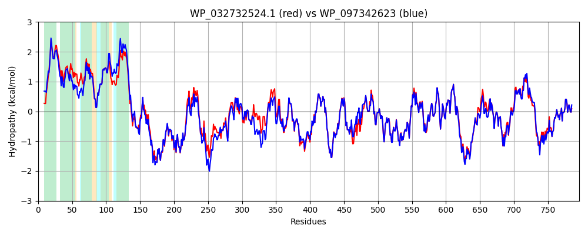

Hit Accession: WP_097342623
Hit TCID: 9.B.306.4.2
Hit Description: gnl|BL_ORD_ID|21651 gnl|TC-DB|WP_097342623.1|9.B.306.4.2 pyrroloquinoline quinone-dependent dehydrogenase [Escherichia coli]
Mach Len: 796
e:0.000000
Query TMS Count : 5
Hit TMS Count: 5
TMS-Overlap Score: 4.700000
Predicted Substrates:None
BLAST Alignment:
Score: 3883 , Bit scores: 1500 bits, E-value: 0.0e+00, Alignment length: 796, Percentage identity: 89
Query: 1 MAETKSQQSRLLVTLTALFAAFCGLYLLIGGAWLVVLGGSWYYPIAGLVMLGVTVMLLRGKRAALWLYAALLLATMIWGVWEVGFDFWALTPRSDILVFFGIWLILPFVWRRLSVPSAGAVGALVVALLISGGMLTWAGFNDPQEVNGTLSADATPAAPISNVADGDWPAYGRNQEGQRFSPLKQINADNVKNLKEAWVFRTGDLKQPNDPGEITNEVTPIKVGDTLFLCTAHQRLFALDAATGKEKWHFDPQLNADPSFQHVTCRGVSYHEAKADNAPADVVADCPRRIILPVNDGRLFAVNADNGKLCETFANKGILNLQTNMPVTTPGMYEPTSPPIITDKTIVIAGAVTDNFSTREPSGVIRGFDVNTGKLLWAFDPGAKDPNAIPSDEHHFTLNSPNSWAPAAYDAKLDLVYLPMGVTTPDIWGGNRTPEQERYASSIVALNATTGKLAWSYQTVHHDLWDMDMPSQPTLADIEVNGKTVPVVYAPAKTGNIFVLDRRNGELVVPAPEKPVPQGAAKGDYVAKTQPFSDLSFRPKKDLTGADMWGATMFDQLVCRVIFHQMRYEGIFTPPSEQGTLVFPGNLGMFEWGGISVDPNRQVAIANPMALPFVSKLIPRGPGNPMEPPKDAKGSGTESGVQPQYGVPYGVTLNPFLSPFGLPCKQPAWGYISALDLKTNEVVWKKRIGTPQDSLPFPMPVKLPFTMGMPMLGGPISTAGNVLFIGATADNYLRAYNMSNGEKLWEARLPAGGQATPMTYEVNGKQYVVISAGGHGSFGTKMGDYIVAYALPDDAK 796
MA + RLLVTLTALFAA CGLYLLIGG WLV +GGSWYYPIAGLVMLGV ML R KRAALWLYAALLL TMIWGVWEVGFDFWALTPRSDILVFFGIWLILPFVWRRL +P++GAV ALVVALLISGG+LTWAGFNDPQE+NGTLSA+ATPA IS VAD DWPAYGRNQEGQRFSPLKQINADNV NLKEAWVFRTGD+KQPNDPGEITNEVTPIKVGDTL+LCTAHQRLFALDAA+GKEKWH+DP+L + SFQHVTCRGVSYHEAKA+ A +V+ADCPRRIILPVNDGRL A+NA+NGKLCETFANKG+LNLQ+NMP T PG+YEPTSPPIITDKTIV+AG+VTDNFSTRE SGVIRGFDVNTG+LLWAFDPGAKDPNAIPSDEH FT NSPNSWAPAAYDAKLDLVYLPMGVTTPDIWGGNRTPEQERYASSI+ALNATTGKLAWSYQTVHHDLWDMD+P+QPTLADI VNG+ VPV+YAPAKTGNIFVLDRRNGELVVPAPEKPVPQGAAKGDYV TQPFS+LSFRPKKDL+GADMWGATMFDQLVCRV+FHQ+RYEGIFTPPSEQGTLVFPGNLGMFEWGGISVDPNR+VAIANPMALPFVSKLIPRGPGNPME PKDAKG+GTESG+QPQYGVPYGVTLNP+LSPFGLPCKQPAWGYISALDLKTNEVVWKKRIGTPQDS+PFPMPV +PF MGMPMLGGPISTAGNVLFI ATADNYLRAYNMSNGEKLW+ RLPAGGQATPMTYEVNGKQYVVISAGGHGSFGTKMGDYIVAYALPDD K
Sbjct: 1 MAINNTGSRRLLVTLTALFAALCGLYLLIGGGWLVAIGGSWYYPIAGLVMLGVAWMLWRSKRAALWLYAALLLGTMIWGVWEVGFDFWALTPRSDILVFFGIWLILPFVWRRLVIPASGAVAALVVALLISGGILTWAGFNDPQEINGTLSANATPAEAISPVADQDWPAYGRNQEGQRFSPLKQINADNVHNLKEAWVFRTGDVKQPNDPGEITNEVTPIKVGDTLYLCTAHQRLFALDAASGKEKWHYDPELKTNESFQHVTCRGVSYHEAKAETASPEVMADCPRRIILPVNDGRLIAINAENGKLCETFANKGVLNLQSNMPDTKPGLYEPTSPPIITDKTIVMAGSVTDNFSTRETSGVIRGFDVNTGELLWAFDPGAKDPNAIPSDEHTFTFNSPNSWAPAAYDAKLDLVYLPMGVTTPDIWGGNRTPEQERYASSILALNATTGKLAWSYQTVHHDLWDMDLPAQPTLADITVNGQKVPVIYAPAKTGNIFVLDRRNGELVVPAPEKPVPQGAAKGDYVTPTQPFSELSFRPKKDLSGADMWGATMFDQLVCRVMFHQLRYEGIFTPPSEQGTLVFPGNLGMFEWGGISVDPNREVAIANPMALPFVSKLIPRGPGNPMEQPKDAKGTGTESGIQPQYGVPYGVTLNPYLSPFGLPCKQPAWGYISALDLKTNEVVWKKRIGTPQDSMPFPMPVPVPFNMGMPMLGGPISTAGNVLFIAATADNYLRAYNMSNGEKLWQGRLPAGGQATPMTYEVNGKQYVVISAGGHGSFGTKMGDYIVAYALPDDVK 796 | Protein Hydropathy Plots: |
|---|
|  |  |
Pairwise Alignment-Hydropathy Plot:
|
|---|
|  |